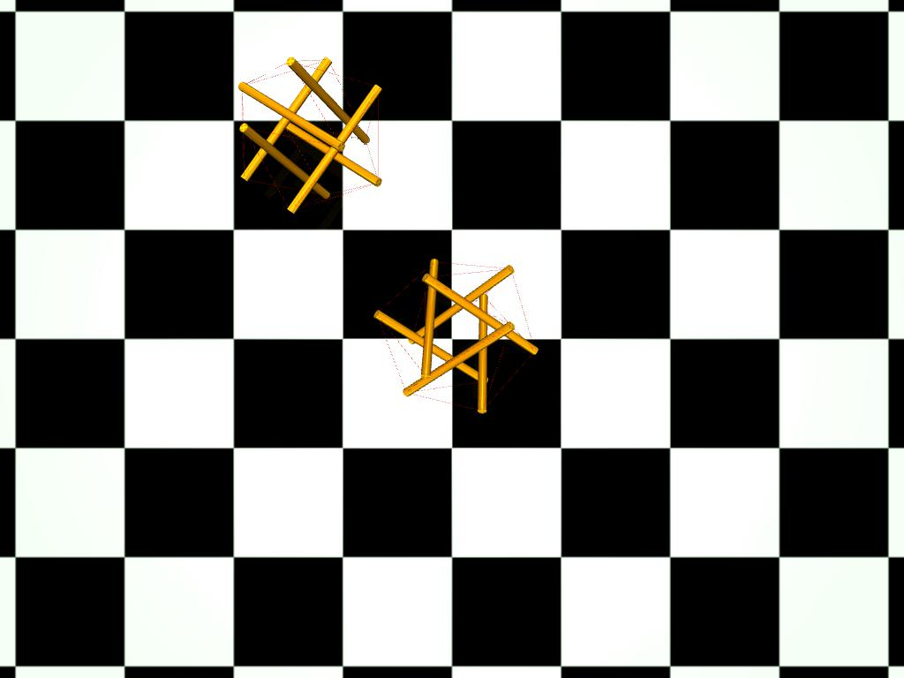

|

|
|
Abstract:
Learning policies in simulation is promising for reducing human effort when training robot controllers. This is especially true for soft robots that are more adaptive and safe but also more difficult to accurately model and control. The sim2real gap is the main barrier to successfully transfer policies from simulation to a real robot. System identification can be applied to reduce this gap but traditional identification methods require a lot of manual tuning. Data-driven alternatives can tune dynamical models directly from data but are often data hungry, which also incorporates human effort in collecting data. This work proposes a data-driven, end-to-end differentiable simulator focused on the exciting but challenging domain of tensegrity robots. To the best of the authors' knowledge, this is the first differentiable physics engine for tensegrity robots that supports cable, contact, and actuation modeling. The aim is to develop a reasonably simplified, data-driven simulation, which can learn approximate dynamics with limited ground truth data. The dynamics must be accurate enough to generate policies that can be transferred back to the ground-truth system. As a first step in this direction, the current work demonstrates sim2sim transfer, where the unknown physical model of MuJoCo acts as a ground truth system. Two different tensegrity robots are used for evaluation and learning of locomotion policies, a 6-bar and a 3-bar tensegrity. The results indicate that only 0.25% of ground truth data are needed to train a policy that works on the ground truth system when the differentiable engine is used for training against training the policy directly on the ground truth system.
|

![[PHOTO]](../../images/knight_small.png)